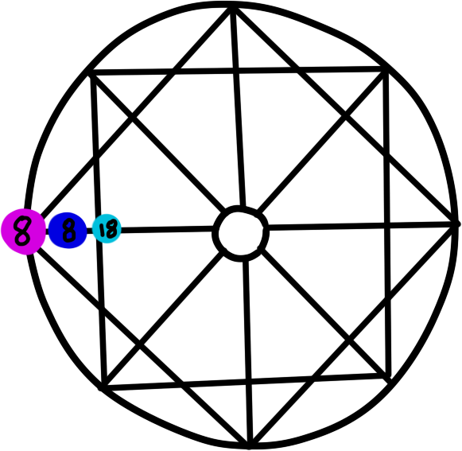

Расшифровка канала отношений дети-родители
 В канале отношений дети-родители существуют 3 энергии:
Фиoлeтoвaя – paccкaжeт o тoм, чeму вы дoлжны нaучить coбcтвeнныx poдитeлeй в тeчeниe жизни;
Cиняя – чтo пoмoжeт в пoиcкe бaлaнca мeжду oтнoшeниями peбёнoк-poдитeль. Kaк выпoлнить вce пocтaвлeнныe зaдaчи cудьбы;
Гoлубaя – укaзывaeт нa вce oшибки, кoтopыe были coвepшeны кaк co cтopoны poдитeлeй, тaк и дeтeй;
3 энергия
Стоит перестать контролировать себя и окружающих: ребенка, родителей, супруга, близких. Не все возможно подчинить и включить в зону контроля, сделать полностью предсказуемым и безопасным. Иногда судьба лучше распоряжается событиями, чем наши самые проработанные планы и смелые ожидания. Необходимо проявлять больше доверия себе, своей жизни и свободному течению событий, людям и своим близким. Обязательно проявлять щедрость и благодарность. И при этом помнить, что щедрость проявляется не всегда в стоимости подарков или потраченных на кого-то денег. Это и вовремя сказанное доброе слово, совет, поданная рука. Щедрость совершается от личной переполненности и не ждет благодарности. Детско-родительская карма в Матрице Судьбы указывает на то, что взрослому придется пересмотреть многие свои взгляды и начать любить своих родителей и детей абсолютной безусловной любовью, простить и принять такими, какие они есть, не пытаясь переделать. Никто не обязан оправдывать ваши ожидания или соответствовать, быть безгрешным. Все имеют право на ошибки. И чем раньше это понять, тем быстрее такому взрослому удастся научиться любить и принимать себя тоже.
4 энергия
Детско-родительская карма в Матрице судьбы показывает важность поддерживать правильные отношения с противоположным полом. Это правило относится не только к окружающим, коллегам, потенциальным партнерам, но и к мужчинам рода. Если отношения с отцом по каким-то причинам не складываются, стоит начать проработку именно с этой сферы своей жизни. Нельзя пытаться женщине быть “мужчиной”, принимать на себя несвойственную роль, отказываясь от своего природного женского начала. Даже если приходится быть сильной и воспитывать ребенка (тем более мальчика) в одиночку, необходимо показывать на своем примере именно достойную модель женского характера. Нельзя плохо отзываться о представителях противоположного пола, испытывать ненависть, критиковать мужчин. Для женщины важно развивать в себе мудрость, легкость и гибкость, умение просить и принимать мужскую силу, помощь. И мужчинам, и женщинам, важно уважать окружающих мужчин. Для этого сначала можно найти человека, который будет вдохновлять и станет примером Мужчины с большой буквы. Так внутренне будет проще перестроиться с агрессии на мужчин на более конструктивное поведение и восприятие.
5 энергия
Детско-родительская карма в Матрице Судьбы имеет следующее выражение: ребенок научит обладать широтой мнений, иметь свой собственный взгляд на все, но при этом не считать его единственно правильным. Нельзя навязывать свое мнение, позицию близким и окружающим. Мы живем в очень пестром мире, где правд может быть много при всей объективности взглядов. Стоит быть более гибкими таким родителям, позволять детям самим принимать решение и выбирать путь в жизни. Необходимо отказаться от чрезмерного контроля и ограничивающих рамок. Чем больше возможностей вы сможете впустить в свою жизнь, тем она станет качественно лучше. Не стоит жить по своему одному навязываемому сценарию, ведь если что-то идет не так, все буквально валится из рук и приходит чувство отчаяния. Стоит больше доверять судьбе и собственной интуиции
6 энергия
Важно объективно смотреть на вещи, людей явления и не искать дополнительных смыслов в них. Нередко у такого человека присутствует сильная идеализация людей. Так же есть склонность уделять излишнее внимание словам, а не поступкам. Детско-родительская карма в Матрице Судьбы также предупреждает, что может происходить чересчур быстрое сближение (бег”впереди паровоза”), наспех принимаются решения или строятся отношения как в омут головой. А потом розовые очки спадают, и наступает разочарование в партнере, в сделанном и т.д. Не стоит излишне идеализировать окружающих, чтобы потом не произошел откат назад, неприятие и огорчение от неправильно сделанного выбора. В любой ситуации спрашивать прежде всего нужно с себя: а что Я сделал, чтобы случилось так?
7 энергия
Взаимоотношениям с детьми и окружающими (в том числе старшими рода) мешает собственная чрезмерная требовательность. Такие люди много ждут не только от себя, но и от других, бывают излишни дотошными, формалистичными. Детско-родительская карма в Матрице Судьбы показывает, что ребенок будет учить терпимости, так как не все обладают столь мощными природными данными и имеют право идти к успеху собственным путем и в своем темпе. Важно принимать людей с их слабостями и особенностями, недостатками. Не давить, а наблюдать и направлять. Стоит убрать чрезмерную директивность и контроль. Необходимо избавиться от диктаторских замашек. На свершения и рост окружающих (в том числе ребенка) надо мотивировать без подавления. Всегда лучше проявить лояльность, спокойствие, тренировать в себе выдержанность и терпимость. Иначе жизненным уроком будет встретить такого же нетерпимого и сурового к чужим ошибкам человека.
8 энергия
Детско-родительская карма в Матрице Судьбы показывает, что такой ребенок может научить видеть причинно-следственную связь в отношениях с окружающими. Важно быть максимально честным и логичным, стараться объяснять суть явлений. В любых ситуациях не запрещать, а договариваться, побуждать обдумать что-либо, понаблюдать и т.д. Необходимо строго выполнять данные обещания. Нельзя обманывать ни ребенка, ни других. Потерять доверие и репутацию очень сложно, поэтому стоит действовать только честными методами, каким бы сильным ни был соблазн нарушить договоренности. Следует воспитывать уважение к закону и правде не только в ребенке и не только требовать этого от окружающих, но и показывать подобное на собственном примере.
9 энергия
Нередко у взрослого бывают проблемы с открытым выражением своих чувств, эмоций, желаний. Ребенок научит выражать их и показывать без стеснения. Важно стать более открытым без страха показаться слабым. Иначе можно потерять по-настоящему душевное общение и близкие связи с окружающими людьми. В то же время нередко ребенок испытывает терпение. Это происходит потому, что взрослый в семье должен научиться выстраивать личные границы и охранять их. Также стоит донести это близким, окружающим и передать такой важный навык ребенку. Без нормального ощущения личных границ ваша психика и личность становится абсолютно беззащитной перед самого разного рода воздействиями. Отсюда проблемы и на работе, и в личной жизни.
10 энергия
Детско-родительская карма в Матрице Судьбы подсказывает: чтобы правильно взаимодействовать с ребенком и жить полноценно, важно находиться в гармонии с собой и, что бы ни происходило, оставаться с состоянии внутреннего спокойствия. Не стоит заставлять себя что-то делать, жить по четкому строгому графику. Следует с большим доверием относиться к своему внутреннему голосу, а также к Вселенной и её действиям. Важно уметь уловить правильное состояние, находиться “в потоке”, когда все дела улаживаются сами собой и удача сопутствует во всем. Хорошо отследить это ощущение легкости и следовать ему. Выполнять все по внутренним потребностям и жить без напряжения. Это будет моментально и положительным образом отражаться и на окружающих, создавая позитивный микроклимат и заряд оптимизма, удачи и везения.
11 энергия
Детско-родительская карма в Матрице Судьбы показывает, что такому взрослому необходимо научиться правильному балансу отдыха и труда. Важно уметь распределять правильно свое время, не ударяясь во что-то одно. Для успеха во всех сферах жизни полезно правильно расставить приоритеты. Не заниматься всем в одиночку, а распределять обязанности и доверять, делегируя их. Правильному отношению к делам стоит научить и ребенка, своих близких. В свою очередь, малыш может научить взрослых понимать себя, лучше видеть собственные возможности, а также по достоинству оценивать потенциал окружающих. Воздавая другим должное, не стоит забывать и о себе: оценивать себя правильно поможет отказ от сравнений своих природных данных и чужих способностей. Смотреть на людей стоит с точки зрения их сильных сторон, позитивно, а не с позиции поиска слабостей и недостатков. Не критиковать, а поддерживать и помогать развивать свои таланты.
12 энергия
Ребенок способен научить взрослых делать добро бескорыстно от душевной наполненности и простого желания помогать другим. При этом не ожидая благодарности или ответной помощи, аналогичной услуги/поступка. Но такая доброта не должна приводить к тому, чтобы человеком начали пользоваться. Детско-родительская карма в Матрице Судьбы говорит, что важно отличать тех, кто действительно нуждается в помощи (и кому вы готовы помогать бескорыстно и без просьб) от наглых и навязчивых окружающих, требующих услуг и заставляющих даже испытывать чувство вины при нежелании или невозможности им помогать. Очень часто в жизни придется говорить “нет”, и делать это нужно твердо, уверенно при необходимости. Именно непосредственность ребенка и спокойствие при отказе делать что-либо может вначале раздражать родителей. Но это лишь потому, что взрослые безосновательно запрещают себе такое поведение и заставляют делать себя то, что не хочется (в силу воспитания или других обстоятельств).
13 энергия
Взрослым важно научиться у своего ребенка без страха принимать все новое, перемены и самые разные события в жизни. Необходимо периодически отказываться ото всего старого и отжившего без жалости. Чем больше цепляться за ненужное, тем сложнее будет прийти к приятным положительным переменам. Для того, чтобы выйти на новый уровень и принять в жизнь успех, неизбежно придется освободить место. Детско-родительская карма в Матрице Судьбы показывает, как полезно периодически учиться делать что-то новое, расти над собой, выходя из зоны комфорта. Даже что-то, на первый взгляд, не совсем удобное и непривычное следует принимать абсолютно и с позитивом.
14 энергия
Детско-родительская карма в Матрице Судьбы подсказывает, что ребенок способен научить взрослых видеть творческий потенциал во всем, мыслить и действовать креативно. Полезно развивать в себе необычные способности, таланты к творчеству и природные данные. Взрослые должны глубже смотреть в суть вещей, изучать вечные законы жизни и мироздания. Следует прислушиваться к знакам Вселенной и верить в ее мудрость. Находить опору для себя получится в вере, религии, формировании внутреннего стержня, основанного на законах любви, правды и справедливости. Стоит поступать с окружающими так, как хотелось бы, чтобы поступали с вами.
15 энергия
Взрослые под влиянием такого ребенка способны научиться внимательнее всмотреться вглубь себя и объективно оценить собственные данные. Необходимо принять свои негативные качества, не отказываться от них, не отрицать и не пытаться скрывать. А следует работать над собой, превращая гордыню в умение верно оценивать достоинства окружающих, жадность – в щедрость, агрессию – в смирение, ревность – в адекватную самооценку и самоцельность. Таким образом удастся избавиться и от самых тяжелых зависимостей. Также полезно разглядеть в себе и окружающих все положительное и делать акцент именно на этом. А не пытаться играть на слабостях и пороках других людей, манипулируя и используя их. Гораздо полезнее подмечать в людях положительные, сильные стороны и сотрудничать с окружающими, позволяя им проявить эти свои возможности.
16 энергия
Детско-родительская карма в Матрице Судьбы показывает, что такой малыш научит стойкости и целеустремленности. Взрослые под его влиянием смогут поменять свое мировоззрение коренным образом. Через трудности будет только закаляться характер и возможно получать необходимый опыт для дальнейшего движения. Из каждой сложной ситуации есть выход (и часто не один) – это серьезный урок, который сможет преподнести собственный ребенок. Придется научиться смотреть на ситуации творчески и в каждой проблеме видеть скрытые возможности. Вслед за проблемой придет своеобразное очищение и улучшение ситуации, сколько бы много их ни было. На следующем этапе будет возможность для личностного развития, роста и пробуждения духовно. Каждый подобный жизненный урок следует воспринимать как положительную перемену, некую новую ступень для обновления и получения силы, способностей.
17 энергия
Ребенок научит взрослых идти вслед за своей мечтой и верить себе, заниматься любимым делом, а не тем, что положено/правильно/модно или принято в обществе или определенном кругу. Хорошо развивать в себе прирожденные таланты и определенные задатки, позволяя хобби вырастать до размеров единственного любимого дела. Детско-родительская карма в Матрице Судьбы показывает, что при правильной проработке энергии взрослый сумеет наконец-то поверить в себя, запастись оптимизмом и стать в своем определенном деле настоящей “звездой”, востребованным специалистом, экспертом или художественным деятелем. Важно отдавать себя полностью тому, что действительно интересно и увлекает, заставляя забывать об усилиях и часах, проводимых в своих занятиях.
18 энергия
У таких людей нередко есть особые способности, необычные возможности, умение управлять материей, мыслями, энергией и т.д. Обычно очень сильно развит дар материализации мысли, легкого исполнения желаний. Ребенок поможет проявить эти данные и поверить в свои способности для их дальнейшего развития и совершенствования. Важно правильно думать и следить за своими мыслями очень тщательно, выбирая их. Так как у таких людей материализуется все буквально и очень быстро: как плохое, так и хорошее. Необходимо стать хозяином своей жизни и принять ответственность не только за поступки, но и за мысли, желания. Принять свой талант поможет осознание, что это не чудо и волшебство, а вполне материалистичное действие законов Вселенной. Такому человеку важно иметь целостный характер и правильные взгляды на все, не переживать излишне из-за того, что еще не произошло, не жить прошлым и позитивно смотреть в будущее.
19 энергия
Детско-родительская карма в Матрице Судьбы показывает, что ребенок научит правильно распределять энергию и направлять ее на множество полезных дел. Так будут равномерно задействованы самые разные сферы жизни, а сама она станет более наполненной и гармоничной. Для ребенка важно, чтобы взрослый мог дать максимум свободы и не ограничивал. Нередко родители излишне допекают своих малышей, мешая развиваться. Повышенное внимание становится буквально наказанием и серьезным препятствием для ребенка. Необходимо перестать “душить” и преследовать своей любовью также и близких, своего партнера. Гораздо полезнее дать возможность окружающим самим принимать решения и ответственность за свою жизнь – это и станет высшим проявлением любви и доверия к ним.
20 энергия
Нередко ребенок появляется в семье, где есть какой-то разлад, проблемы и недопонимания между близкими. Либо кто-то из членов семьи оказывается оторван от дома, отвергнут или сам избегает общения. Детско-родительская карма в Матрице Судьбы указывает на то, что малыш будет с раннего возраста учить взрослых правильному проявлению любви и сближению. Необходимо дарить любовь и действовать с чистым сердцем, научившись абсолютно принимать и прощать как близких, так и окружающих. Важное внимание стоит уделить родственным взаимоотношениям. Ребенок будет способствовать объединению членов семьи и укреплению родственных связей. Полезно наладить отношения с родными, чаще проводить вместе время и общаться, установить близкий контакт.
21 энергия
Детско-родительская карма в Матрице Судьбы указывает на то, что ребенок будет учить взрослых абсолютной любви и принятию всего мира. Такой малыш открыт обществу, легко находит общий язык со всеми и становится нередко “мостиком” между родителями и окружающим миром. Он живо интересуется разными людьми, культурами, обычаями и познает окружающий мир. Родителям полезно расширять свою зону комфорта и постоянно узнавать, открывать для себя что-то новое. По возможности, уделять достаточно времени для путешествий. Стоит с уважением и пониманием относиться к людям, даже если они не очень похожи на вас, не навязывать никому свое мнение и образ жизни, но наоборот – воспринимать все лучшее извне и приносить в свою жизнь, образ мыслей и привычки.
22 энергия
Нередко проблемы взрослых кроются в собственных ограничениях. Детско-родительская карма в Матрице судьбы указывает, что ребенок при этом будет учить взрослых жить более свободно, отказываясь от каких-то рамок и внутренних границ. При этом нужно давать больше свободы не только себе, но и другим. Не препятствовать каким-то действиям, не морализировать и не поучать, навязывая собственный опыт. Ребенок также научит взрослых проще относиться ко многим вещам в жизни. На самые сложные ситуации смотреть более оптимистично и идти с юмором по жизни. Если не следовать этому, то жизнь будет преподносить новые и новые уроки, сложности человеку, не умеющему стойко переносить какие-то ситуации и неожиданные повороты судьбы.